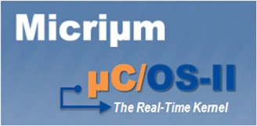
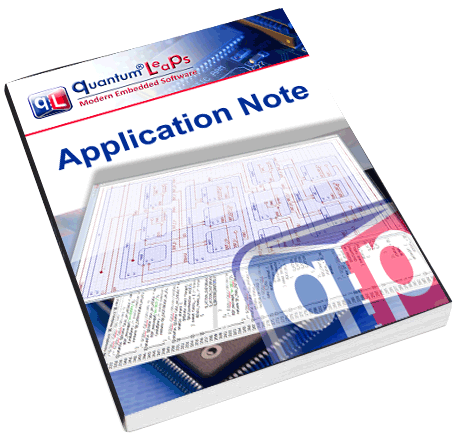

QP/C++
7.3.4
Real-Time Embedded Framework

This directory contains a generic platform-independent QP/C++ port to uC-OS2 V2.92.
Typically, you should not need to change the files in this directory to adapt the QP/C++-uC-OS2 port on any CPU/Compiler to which uC-OS2 has been ported, because all the CPU and compiler specifics are handled by the uC-OS2 RTOS.
The uC-OS2 V2.92 source code and ports are located in 3rd_party/uc-os2. Please make sure to read about uC-OS2 licensing in the README file found in this directory.
The example projects for this port are located in the examples/uc-os2/arm-cm/dpp_ek-tm4c123gxl folder.
Currently, ARM-KEIL and IAR-ARM toolsets are supported (in the arm and iar sub-directories within this example project).
The example projects use this port by directly including the QP/C++ source code (and this port) in the application projects. (There is no QP/C++ library to build.)
QP/C++ Source Files Needed in this QP/C++ Port
It is important to note that not all QP/C++ source files should be included in the build process. Specifically, the QP/C++ source files qf_actq.c and qf_mem.c must NOT be included in the build, because this functionality is taken from uC-OS2. Here is the list of QP/C++ source files needed:
